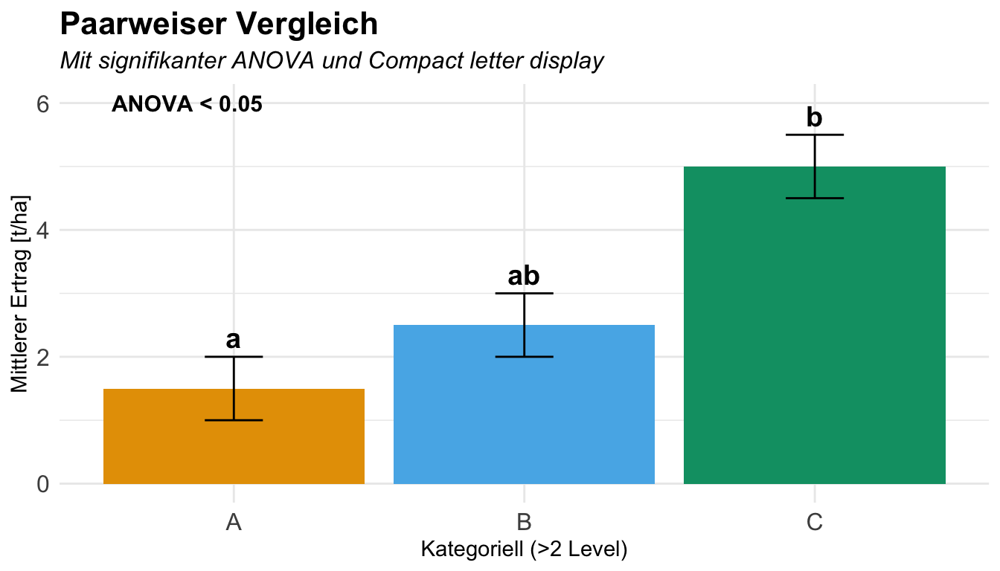
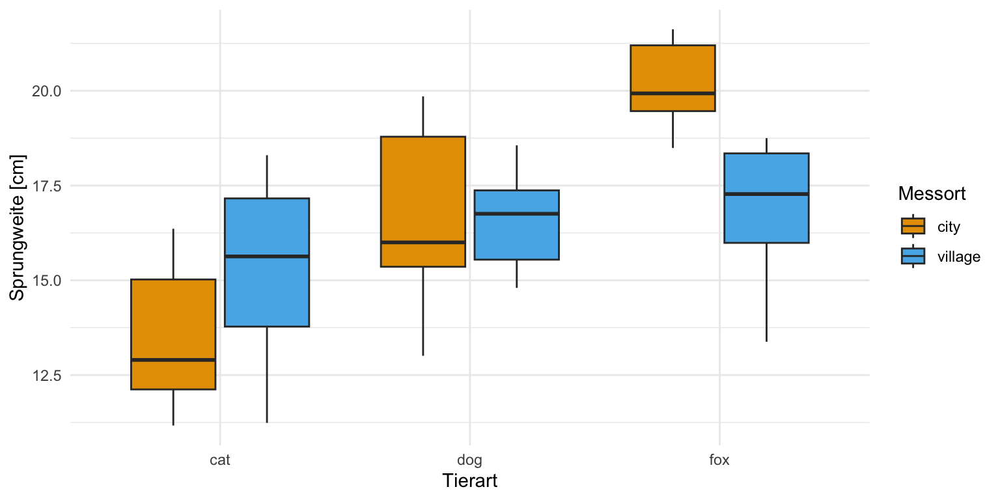
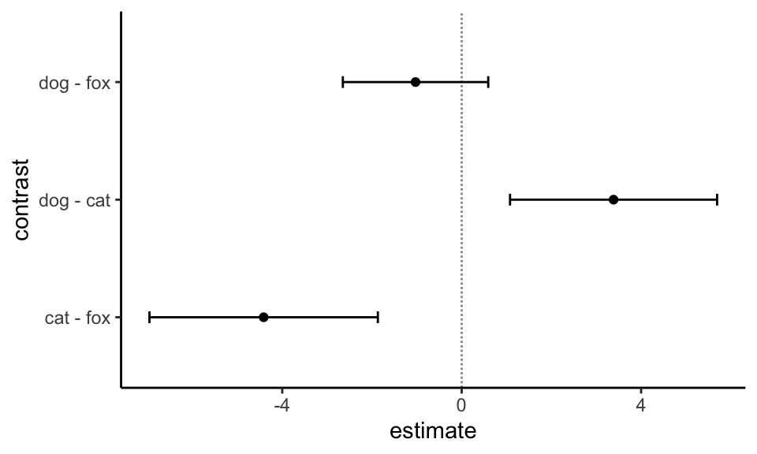
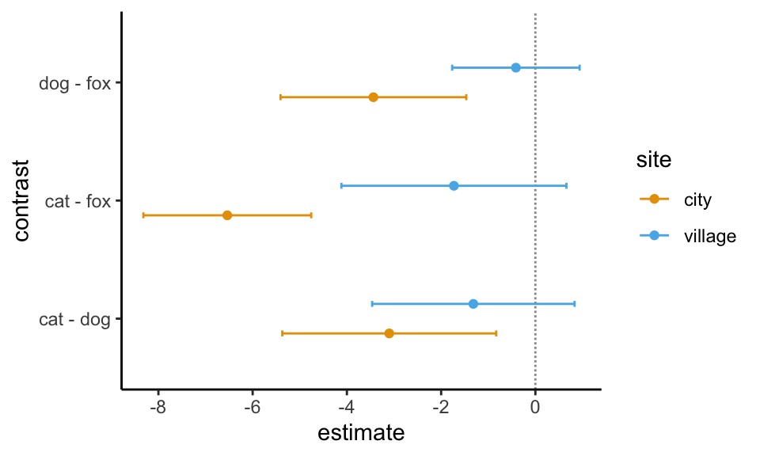

Der Post-hoc-Test
Letzte Änderung am 10. January 2025 um 09:38:43
“Comparison is the thief of joy.” — Theodore Roosevelt
Genutzte R Pakete
Wir wollen folgende R Pakete in diesem Kapitel nutzen.
pacman::p_load(tidyverse, magrittr, broom, nlme, agricolae,
multcomp, emmeans, ggpubr, multcompView,
rstatix, conflicted, see, rcompanion)An der Seite des Kapitels findest du den Link Quellcode anzeigen, über den du Zugang zum gesamten R-Code dieses Kapitels erhältst.
Daten
fac1_tbl <- read_xlsx("data/flea_dog_cat_fox.xlsx") |>
select(animal, jump_length) |>
mutate(animal = as_factor(animal))| animal | jump_length |
|---|---|
| dog | 5.7 |
| dog | 8.9 |
| dog | 11.8 |
| … | … |
| fox | 10.6 |
| fox | 8.6 |
| fox | 10.3 |
Die Funktion standard_error() aus dem R Paket {parameters}
| animal | Mittelwert | Standardabweichung | SE |
|---|---|---|---|
| dog | 8.13 | 2.14 | 0.81 |
| cat | 4.74 | 1.90 | 0.72 |
| fox | 9.16 | 1.10 | 0.42 |

Wir machen den Datensatz mal kleiner
fac2_tbl <- read_xlsx("data/flea_dog_cat_fox_site.xlsx") |>
select(animal, site, jump_length) |>
filter(site %in% c("city", "village")) |>
mutate(animal = as_factor(animal),
site = as_factor(site))| animal | site | jump_length |
|---|---|---|
| cat | city | 12.04 |
| cat | city | 11.98 |
| cat | city | 16.1 |
| … | … | … |
| fox | field | 13.63 |
| fox | field | 14.09 |
| fox | field | 15.52 |
| animal | site | Mittelwert | Standardabweichung | SE |
|---|---|---|---|---|
| cat | city | 13.58 | 1.88 | 0.59 |
| cat | village | 15.25 | 2.35 | 0.74 |
| dog | city | 16.68 | 2.26 | 0.71 |
| dog | village | 16.56 | 1.21 | 0.38 |
| fox | city | 20.12 | 1.15 | 0.37 |
| fox | village | 16.98 | 1.73 | 0.55 |

Modell
Einfaktorielles Modell
\[ y \sim f_1 \]
Zweifaktorielles Modell
\[ y \sim f_1 + f_2 \]
Varianzhomogenität und Varianzheterogenität
Varianz in den Fakoren


Der ANOVA Pfad mit TukeyHSD()
Tukey HSD
\[ q = \tfrac{\bar{y}_{max} - \bar{y}_{min}}{SE} \]
\[ HSD = q_{\alpha, k, n-k} \cdot\tfrac{MSE}{n} \]
plant.av <- aov(weight ~ group, data = PlantGrowth)
summary(plant.av) Df Sum Sq Mean Sq F value Pr(>F)
group 2 3.766 1.8832 4.846 0.0159 *
Residuals 27 10.492 0.3886
---
Signif. codes: 0 '***' 0.001 '**' 0.01 '*' 0.05 '.' 0.1 ' ' 1tukey.test <- TukeyHSD(plant.av)
tukey.test Tukey multiple comparisons of means
95% family-wise confidence level
Fit: aov(formula = weight ~ group, data = PlantGrowth)
$group
diff lwr upr p adj
trt1-ctrl -0.371 -1.0622161 0.3202161 0.3908711
trt2-ctrl 0.494 -0.1972161 1.1852161 0.1979960
trt2-trt1 0.865 0.1737839 1.5562161 0.0120064multcompLetters(extract_p(tukey.test$group))trt1 trt2 ctrl
"a" "b" "ab" {agricolae}
plant.av <- aov(weight ~ group, data = PlantGrowth)
summary(plant.av) Df Sum Sq Mean Sq F value Pr(>F)
group 2 3.766 1.8832 4.846 0.0159 *
Residuals 27 10.492 0.3886
---
Signif. codes: 0 '***' 0.001 '**' 0.01 '*' 0.05 '.' 0.1 ' ' 1tukey.test2 <- HSD.test(plant.av, trt = 'group')
tukey.test2$statistics
MSerror Df Mean CV MSD
0.3885959 27 5.073 12.28809 0.6912161
$parameters
test name.t ntr StudentizedRange alpha
Tukey group 3 3.506426 0.05
$means
weight std r se Min Max Q25 Q50 Q75
ctrl 5.032 0.5830914 10 0.1971284 4.17 6.11 4.5500 5.155 5.2925
trt1 4.661 0.7936757 10 0.1971284 3.59 6.03 4.2075 4.550 4.8700
trt2 5.526 0.4425733 10 0.1971284 4.92 6.31 5.2675 5.435 5.7350
$comparison
NULL
$groups
weight groups
trt2 5.526 a
ctrl 5.032 ab
trt1 4.661 b
attr(,"class")
[1] "group"Der effektive Pfad mit {emmeans}
Text
- Varianzheterogenität
-
Wir können in
{emmeans}eine mögliche Varianzheterogenität modellieren. In allen Beispielen hier, werde ich das machen. Dazu nutze ich dann die Optionvcov. = sandwich::vcovHACimemmeans()Funktionsaufruf. In dem R Paket{sandwich}gibt es eine riesige Anzahl an möglichen Funktionen um für Varianzheterogenität zu adjustieren. Wir nutzen hier die OptionvcovHAC, die in vielen Fällen vollkommen ausrichend ist. Wenn du nicht für die Varianzheterogenität adjustieren möchtest, dann rechnest du faktisch einen Tukey HSD Test. Der Tukey HSD Test rechnet immer mit Varianzhomogenität. - Adjustierung für multiple Vergleiche
-
Das Paket
{emmeans}kann sehr einfach für die Adjustierung von multiplen Vergleichen angepasst werden um adjustierte p-Werte zu erhalten. In der Standardeinstellung nutzt{emmeans}die Quartile aus einem Tukey HSD Test und somit ist{emmeans}gar nicht so weit weg von dem Tukey HSD Test. Ich stelle aber meistens die Adjustierung auf Bonferroniadjustierung mit der Optionadjust = "bonferroni", da diese Adjustierung etwas eingängiger ist. Das bleibt aber dir überlassen, ob du überhaupt eine Adustierung wählen willst. Mit der Optionadjust = "none"stellst du die Adjustierung für multiple Vergleiche aus. Du erhälst die rohen p-Werte. - Vergleiche
-
Wir können auch eine andere Kontrolle wählen
contrast(method = "trt.vs.ctrl", ref = "fox")
Einfaktorielle Analyse
fac1_fit <- lm(jump_length ~ animal, data = fac1_tbl)emm_fac1_obj <- fac1_fit |>
emmeans(~ animal, vcov. = sandwich::vcovHAC)
emm_fac1_obj animal emmean SE df lower.CL upper.CL
dog 8.13 0.427 18 7.23 9.03
cat 4.74 0.810 18 3.04 6.44
fox 9.16 0.468 18 8.17 10.14
Confidence level used: 0.95 comp_fac1_obj <- emm_fac1_obj |>
contrast(method = "pairwise", adjust = "bonferroni")
comp_fac1_obj contrast estimate SE df t.ratio p.value
dog - cat 3.39 0.904 18 3.744 0.0045
dog - fox -1.03 0.635 18 -1.620 0.3678
cat - fox -4.41 0.997 18 -4.425 0.0010
P value adjustment: bonferroni method for 3 tests emm_fac1_obj |>
pwpp(adjust = "bonferroni") +
theme_minimal()
emm_fac1_obj |>
pwpm(adjust = "bonferroni") dog cat fox
dog [8.13] 0.0045 0.3678
cat 3.39 [4.74] 0.0010
fox -1.03 -4.41 [9.16]
Row and column labels: animal
Upper triangle: P values adjust = "bonferroni"
Diagonal: [Estimates] (emmean)
Lower triangle: Comparisons (estimate) earlier vs. lateremm_fac1_obj |>
contrast(method = "pairwise") |>
cld(Letters = letters, adjust = "bonferroni") contrast estimate SE df t.ratio p.value .group
cat - fox -4.41 0.997 18 -4.425 0.0010 a
dog - fox -1.03 0.635 18 -1.620 0.3678 b
dog - cat 3.39 0.904 18 3.744 0.0045 c
P value adjustment: bonferroni method for 3 tests
significance level used: alpha = 0.05
NOTE: If two or more means share the same grouping symbol,
then we cannot show them to be different.
But we also did not show them to be the same. res_fac1_ci_obj <- emm_fac1_obj |>
contrast(method = "pairwise") |>
tidy(conf.int = TRUE) |>
select(contrast, estimate, adj.p.value, conf.low, conf.high) |>
mutate(across(where(is.numeric), round, 4))
res_fac1_ci_obj# A tibble: 3 × 5
contrast estimate adj.p.value conf.low conf.high
<chr> <dbl> <dbl> <dbl> <dbl>
1 dog - cat 3.39 0.004 1.08 5.69
2 dog - fox -1.03 0.263 -2.65 0.592
3 cat - fox -4.41 0.0009 -6.96 -1.87 ggplot(res_fac1_ci_obj, aes(contrast, y=estimate, ymin=conf.low, ymax=conf.high)) +
geom_hline(yintercept=0, linetype="11", colour="grey60") +
geom_errorbar(width=0.1) +
geom_point() +
coord_flip() +
theme_classic()

Zweifaktorielle Analyse
Modell
\[ y \sim f_1 + f_2 + f_1 \times f_2 \]
fac2_fit <- lm(jump_length ~ animal + site + animal:site, data = fac2_tbl)Wir müssen uns jetzt entscheiden wie wir die beiden Faktoren \(f_1\) mit animal und \(f_2\) mit site auswerten wollen. Wir können den Faktor animal getrennt für jedes Level des Faktors site vergleichen oder wir vergleichen alle Faktorkombinationen gemeinsam.
emm_fac2_separate_obj <- fac2_fit |>
emmeans(~ animal | site, vcov. = sandwich::vcovHAC)
emm_fac2_separate_objsite = city:
animal emmean SE df lower.CL upper.CL
cat 13.6 0.603 54 12.4 14.8
dog 16.7 0.693 54 15.3 18.1
fox 20.1 0.395 54 19.3 20.9
site = village:
animal emmean SE df lower.CL upper.CL
cat 15.2 0.834 54 13.6 16.9
dog 16.6 0.246 54 16.1 17.1
fox 17.0 0.489 54 16.0 18.0
Confidence level used: 0.95 emm_fac2_combinded_obj <- fac2_fit |>
emmeans(~ animal * site, vcov. = sandwich::vcovHAC)
emm_fac2_combinded_obj animal site emmean SE df lower.CL upper.CL
cat city 13.6 0.603 54 12.4 14.8
dog city 16.7 0.693 54 15.3 18.1
fox city 20.1 0.395 54 19.3 20.9
cat village 15.2 0.834 54 13.6 16.9
dog village 16.6 0.246 54 16.1 17.1
fox village 17.0 0.489 54 16.0 18.0
Confidence level used: 0.95 comp_fac2_separate_obj <- emm_fac2_separate_obj |>
contrast(method = "pairwise", adjust = "bonferroni")
comp_fac2_separate_objsite = city:
contrast estimate SE df t.ratio p.value
cat - dog -3.101 0.919 54 -3.376 0.0041
cat - fox -6.538 0.721 54 -9.070 <.0001
dog - fox -3.437 0.798 54 -4.310 0.0002
site = village:
contrast estimate SE df t.ratio p.value
cat - dog -1.316 0.869 54 -1.514 0.4076
cat - fox -1.729 0.967 54 -1.789 0.2377
dog - fox -0.413 0.547 54 -0.755 1.0000
P value adjustment: bonferroni method for 3 tests comp_fac2_separate_obj |>
summary() |>
as_tibble() |>
select(contrast, site, p.value) |>
mutate(p.value = format.pval(p.value, eps = 0.001, digits = 2))# A tibble: 6 × 3
contrast site p.value
<fct> <fct> <chr>
1 cat - dog city 0.00
2 cat - fox city <0.001
3 dog - fox city <0.001
4 cat - dog village 0.41
5 cat - fox village 0.24
6 dog - fox village 1.00 Hier müssen wir dann nochmal emmeans aufrufen! Wir machen das hier nochmal für getrennt.
emm_fac2_separate_obj |>
pwpp(adjust = "bonferroni") +
theme_minimal()
emm_fac2_separate_obj |>
pwpm(adjust = "bonferroni")
site = city
cat dog fox
cat [13.6] 0.0041 <.0001
dog -3.10 [16.7] 0.0002
fox -6.54 -3.44 [20.1]
site = village
cat dog fox
cat [15.2] 0.4076 0.2377
dog -1.316 [16.6] 1.0000
fox -1.729 -0.413 [17.0]
Row and column labels: animal
Upper triangle: P values adjust = "bonferroni"
Diagonal: [Estimates] (emmean)
Lower triangle: Comparisons (estimate) earlier vs. lateremm_fac2_separate_obj |>
contrast(method = "pairwise") |>
cld(Letters = letters, adjust = "bonferroni")site = city:
contrast estimate SE df t.ratio p.value .group
cat - fox -6.538 0.721 54 -9.070 <.0001 a
dog - fox -3.437 0.798 54 -4.310 0.0002 b
cat - dog -3.101 0.919 54 -3.376 0.0041 b
site = village:
contrast estimate SE df t.ratio p.value .group
cat - fox -1.729 0.967 54 -1.789 0.2377 a
cat - dog -1.316 0.869 54 -1.514 0.4076 a
dog - fox -0.413 0.547 54 -0.755 1.0000 a
P value adjustment: bonferroni method for 3 tests
significance level used: alpha = 0.05
NOTE: If two or more means share the same grouping symbol,
then we cannot show them to be different.
But we also did not show them to be the same. comp_fac2_ci_obj <- emm_fac2_separate_obj |>
contrast(method = "pairwise") |>
confint(adjust = "bonferroni") |>
as_tibble() |>
select(contrast, site, estimate, conf.low = lower.CL, conf.high = upper.CL)
comp_fac2_ci_obj # A tibble: 6 × 5
contrast site estimate conf.low conf.high
<fct> <fct> <dbl> <dbl> <dbl>
1 cat - dog city -3.10 -5.37 -0.831
2 cat - fox city -6.54 -8.32 -4.76
3 dog - fox city -3.44 -5.41 -1.47
4 cat - dog village -1.32 -3.46 0.832
5 cat - fox village -1.73 -4.12 0.659
6 dog - fox village -0.413 -1.77 0.939ggplot(comp_fac2_ci_obj, aes(contrast, y=estimate, ymin=conf.low, ymax=conf.high,
color = site, group = site)) +
geom_hline(yintercept=0, linetype="11", colour="grey60") +
geom_errorbar(width=0.1, position = position_dodge(0.5)) +
geom_point(position = position_dodge(0.5)) +
scale_color_okabeito() +
coord_flip() +
theme_classic()
